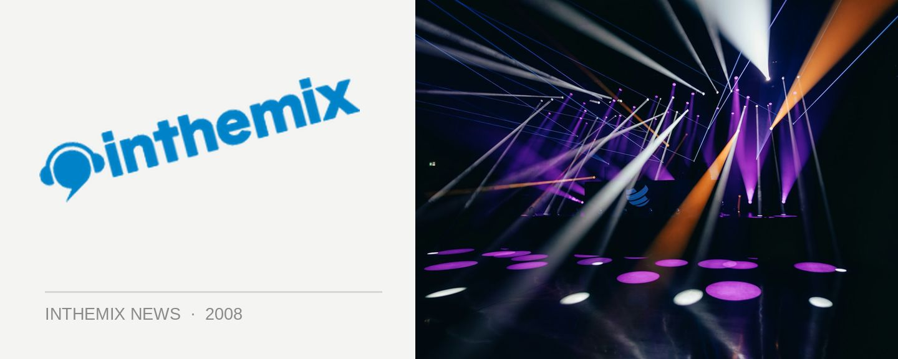

Anthony Pappa returns home in June
Anthony Pappa is still one of Australia’s biggest dance music exports, and in 2008 he’s finally releasing another mix CD of fresh upfront tunes, which is coming a massive five years after his last Balance release. Moments will be in the stores in early April, and Pappa will be returning home to help launch it in June.
So what can we expect form Moments? You’ll be hearing Pappa’s instantly recognisable take on the ‘progressive’ sound, which really means that he’ll be weaving together a wide variety of different types of underground dance music: deep to twisted tech house, minimal, electro and a maybe little bit of the upfront big room progressive he likes to chuck in every now and then. It’ll also feature an exclusive production from the man himself called OutBack, his first in quite a while, and you can expect his typically meticulous attention to mixing and programming. But that goes without saying.
Catch Anthony Pappa when he returns home for the following shows…
June 6th – Sweetchili, Sydney
June 13th – Ritual, Brisbane
June 14th – Darkbeat, Melbourne
June 20th – Rise, Perth,
Wondering what Anthony’s currently playing? Check out this DJ mix he recently passed on to ITM-FM!